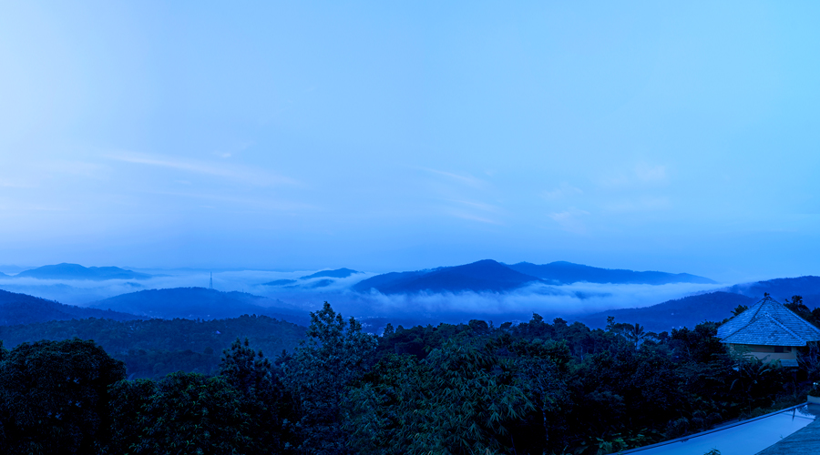

<div class="container project-view">
    
	<div class="row">
        <div class="col-md-8 project-images">
            
            
            
            
            
            
            
            
            
            
            
            
            
            
            
		</div>
        <div class="col-md-4">
            <div class="project-info">
                <h2>Poetree Sarovar Portico Thekkady</h2>

                <div class="details">
                    <!-- <div class="info-text">
                        <span class="title">Date</span>
                        <span class="val">March 2014</span>
                    </div> -->

                    <div class="info-text">
                        <span class="title">Location</span>
                        <span class="val">Thekkady, kerala</span>
                    </div>

                    <div class="info-text">
                        <span class="title">Category</span>
                        <span class="val">Luxury Wedding</span>
                    </div>
                </div>

                    Located at a unique vantage point on top of a hill and embraced by acres of untouched land and forest, Poetree is a dream, built on principles of sustainability, eco-friendliness and being one with nature. A resort, with an ethos that stems from the heart and spirit of the land that it is built on. Thekkady, set in the midst of the high ranges, gets its name from ‘Thekku’ the Teak tree and ‘adi’ Meaning, Valley. Valley of the region where the Teak trees are found aplenty, thus meaning ‘a valley of Teaks.
					<br/><br/>
					From the shaded seclusion of this property, designed with minimalist and aesthetic principles, guests can relax in luxury and admire unforgettable views over the Periyar forest and across expansive mountain ranges, with the distant backdrops of waterfalls and the ever-providing Periyar River. From elephants that you could try your hand at giving a bath to, to the tiger, Periyar is home to some of the most conservated wildlife populations in the country. From each room, guests can soak in a calm and serene vibe, a feeling of being one with the land, distinct to Periyar and Thekkady.
					<br/><br/>
					Thekkady is famous for its wildlife reserve and is considered a haven for natural spices. The splendid artificial lake formed by Mullaperiyar Dam across the Periyar River is the greatest attraction where herds of wild elephants come down to quench their thirst. The sanctuary can be accessed by boating, trekking or jeep safari. There are picturesque plantations and hill towns spread across the area that holds great opportunities for treks and mountain walks.
            </div>
        </div>
    </div>
</div>